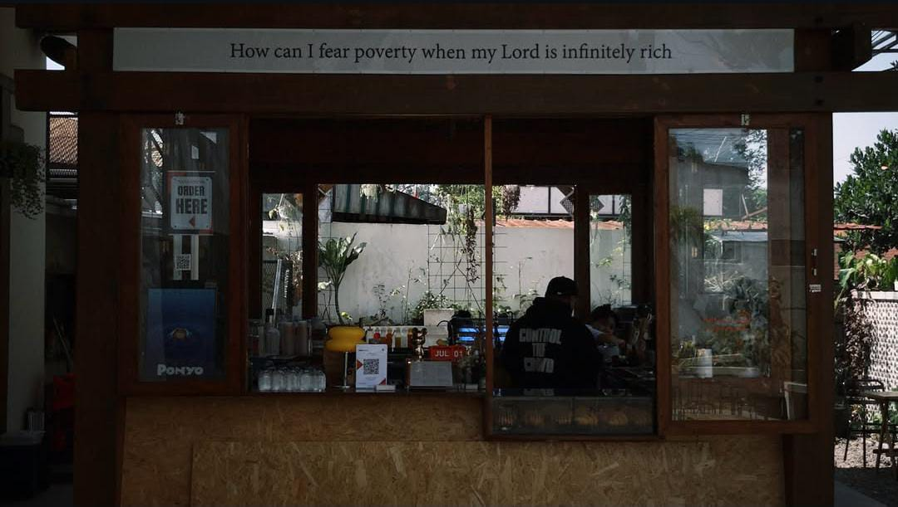
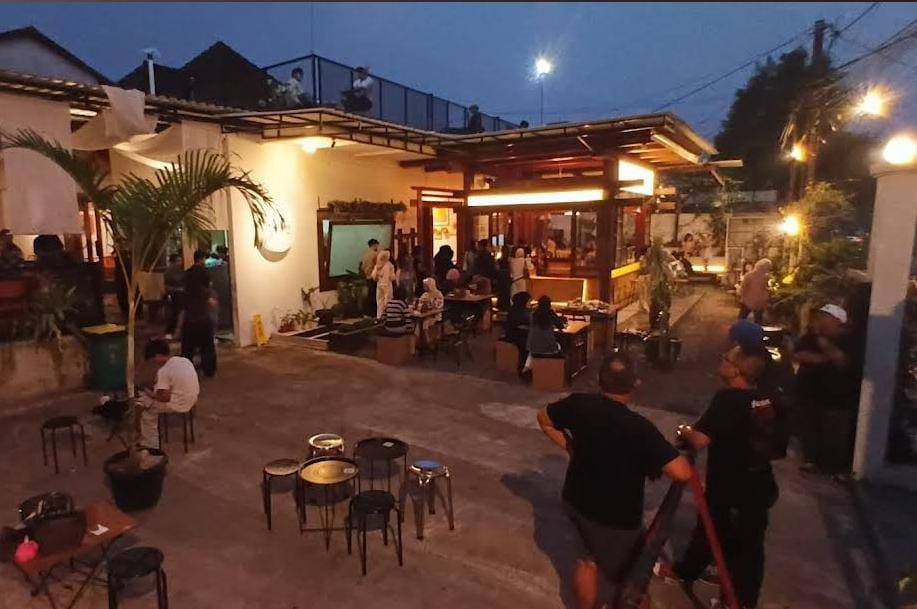

Tentang Kami
A homey cafe in Sukabumi for your daily coffee and a place to create stories.
Open daily from 07.00 - 22.00 WIB.





Suara Pelanggan
4.9
★★★★★
"Tempatnya nyaman untuk nongkrong bareng teman, kopi susu nya best banget!"